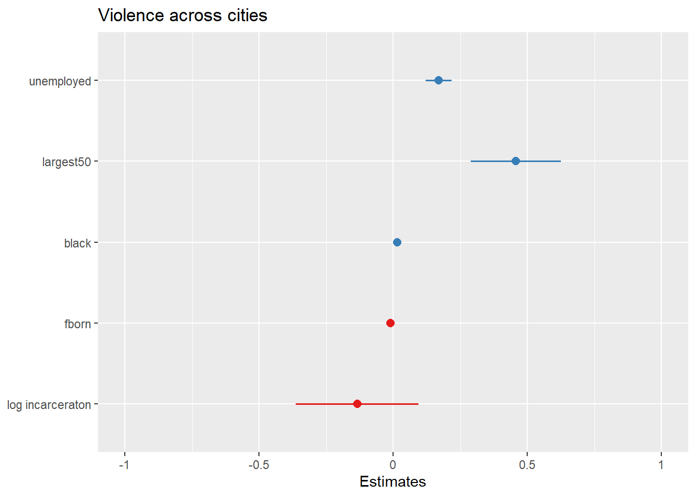
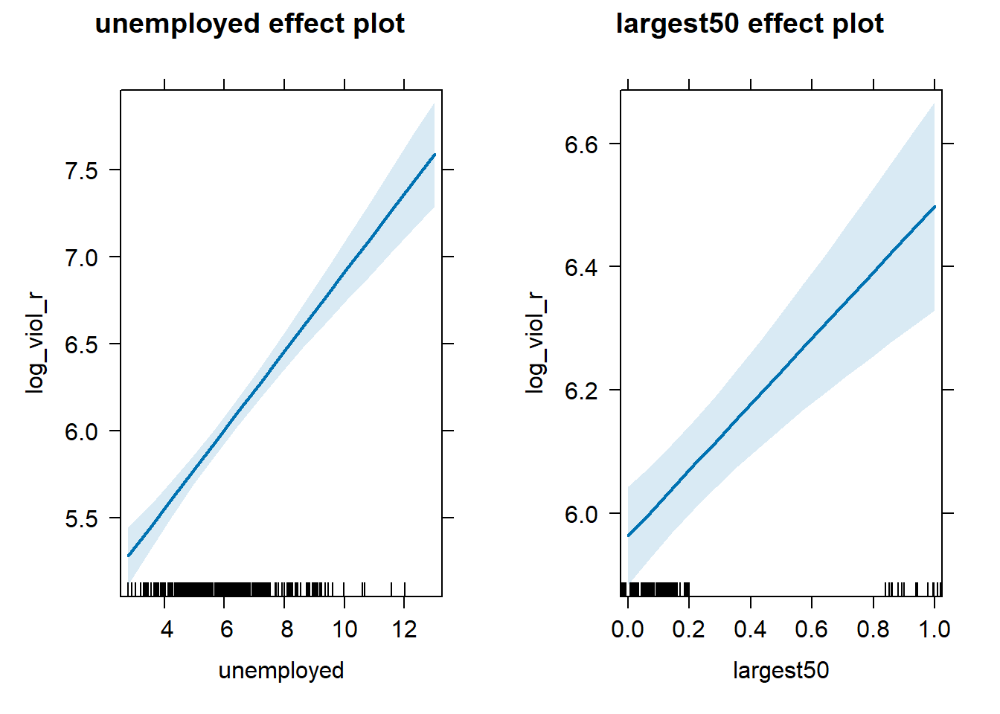
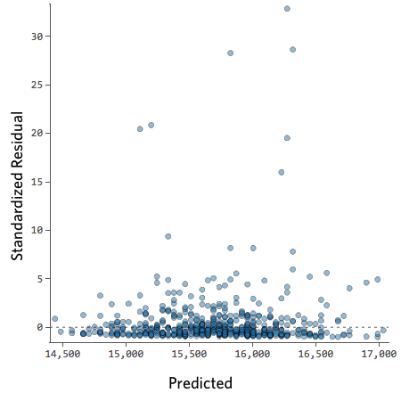

Chapter 7 Regression III
7.2 Fitting regression with categorical predictors
So far we have explained regression using a numeric input. It turns out we can also use regression with categorical explanatory variables. It is quite straightforward to run it.
We have one categorical variable in the dataset, largest50, identifying whether the city is one of the 50 largest in the country.
urlfile <- "https://dataverse.harvard.edu/api/access/datafile/:persistentId?persistentId=doi:10.7910/DVN/46WIH0/ARS2VS"
communitycrime <- read.table(urlfile, sep = '\t',header = T)
library(dplyr)##
## Attaching package: 'dplyr'## The following objects are masked from 'package:stats':
##
## filter, lag## The following objects are masked from 'package:base':
##
## intersect, setdiff, setequal, uniondf <- filter(communitycrime, year == "2012")
df <- select(df, place_name, state_name, viol_r, black, lesshs, unemployed, fborn, incarceration, log_incarceraton, swornftime_r, log_viol_r, largest50)
table(df$largest50)##
## 0 1
## 216 48## [1] "numeric"This variable is however stored in a numeric vector. We may want to change this to reflect the fact it is actually categorical.
## [1] "factor"Let’s rename the levels. In previous sessions we have illustrated how to do that with base R functions. Here we introduce a new package forcats that is worth considering when doing any work with factor variables. You can read more about it here.
##
## No Yes
## 216 48We can explore if particularly large cities have higher rates of violence (remember a rate controls for population size, so if this were to be significant it would be telling us that it’s not just because there is more people in them!). This is how you would express the model:
Notice that there is nothing different in how we ask for the model. And see below the regression line:
## Warning: package 'ggplot2' was built under R version 4.3.2## Warning: Using `size` aesthetic for lines was deprecated in ggplot2 3.4.0.
## ℹ Please use `linewidth` instead.
## This warning is displayed once every 8 hours.
## Call `lifecycle::last_lifecycle_warnings()` to see where this warning was
## generated.
Although in the plot we still see a line, what we are really estimating here is the average of log_viol_r for each of the two categories.
Let’s have a look at the results:
##
## Call:
## lm(formula = log_viol_r ~ largest50, data = df)
##
## Residuals:
## Min 1Q Median 3Q Max
## -2.11616 -0.48286 0.02965 0.51523 1.49789
##
## Coefficients:
## Estimate Std. Error t value Pr(>|t|)
## (Intercept) 5.94763 0.04771 124.661 < 2e-16 ***
## largest50Yes 0.62114 0.11189 5.551 6.94e-08 ***
## ---
## Signif. codes: 0 '***' 0.001 '**' 0.01 '*' 0.05 '.' 0.1 ' ' 1
##
## Residual standard error: 0.7012 on 262 degrees of freedom
## Multiple R-squared: 0.1052, Adjusted R-squared: 0.1018
## F-statistic: 30.82 on 1 and 262 DF, p-value: 6.943e-08As you will see the output does not look too different. But notice that in the print out you see how the row with the coefficient and other values for our input variable largest50 we see that R is printing largest50Yes. What does this mean?
Remember week 6 and t tests? It turns out that a linear regression model with just one dichotomous categorical predictor is just the equivalent of a t test. When you only have one predictor the value of the intercept is the mean value of what we call the reference category and the coefficient for the slope tells you how much higher (if it is positive) or how much lower (if it is negative) is the mean value for the other category in your factor.
The reference category is the one for which R does not print the level next to the name of the variable for which it gives you the regression coefficient. Here we see that the named level is “Yes” (largest50Yes). That’s telling you that the reference category here is “No”. Therefore the Y intercept in this case is the mean value of violence for cities that are not the largest in the country, whereas the coefficient for the slope is telling you how much higher the mean value is for the largest cities in the country. Don’t believe me?
## [1] 5.947628#Compute the difference between the two means
mean(df$log_viol_r[df$largest50 == "Yes"], na.rm=TRUE) - mean(df$log_viol_r[df$largest50 == "No"], na.rm=TRUE)## [1] 0.6211428So, to reiterate, for a single binary predictor, the coefficient is nothing else than the difference between the mean of the two levels in your factor variable, between the averages in your two groups.
With categorical variables encoded as factors you always have a situation like this: a reference category and then as many additional coefficients as there are additional levels in your categorical variable. Each of these additional categories is input into the model as “dummy” variables. Here our categorical variable has two levels, thus we have only one dummy variable. There will always be one fewer dummy variable than the number of levels. The level with no dummy variable, females in this example, is known as the reference category or the baseline.
It turns out then that the regression table is printing out for us a t test of statistical significance for every input in the model. If we look at the table above this t value is 5.55 and the p value associated with it is near 0. This is indeed considerably lower than the conventional significance level of 0.05. So we could conclude that the probability of obtaining this value if the null hypothesis is true is very low. However, the observed r squared is also kind of poor. Read this to understand a bit more this phenomenon of low p, but also low r-squared.
If rather than a binary explanatory variable, you had a factor with five levels. Then if you were to run a regression model this would result in a model with 4 dummy variables. The coefficient of each of these dummies would be telling you how much higher or lower (if the sign were negative) was the level of violence for each of the levels for which you have a dummy compared to your reference category or baseline. One thing that is important to keep in mind is that R by default will use as the baseline category the first level in your factor.
## [1] "No" "Yes"In our case you can see “No” is listed first. Keep in mind for your assignment that levels in factors are often alphabetically listed, not in a particularly meaningful or useful way. If you want to change this you may need to reorder the levels. See here how to do this.
7.3 Motivating multiple regression
So we have seen that our models with just one predictor are not terribly powerful. Partly that’s due to the fact that they are not properly specified, they do not include a solid set of good predictor variables that can help us to explain variation in our response variable. We can build better models by expanding the number of predictors (although keep in mind you should also aim to build models as parsimonious as possible).
Another reason why it is important to think about additional variables in your model is to control for spurious correlations (although here you may also want to use your common sense when selecting your variables!). You must have heard before that correlation does not equal causation. Just because two things are associated we cannot assume that one is the cause for the other. Typically we see how the pilots switch the secure the belt button when there is turbulence. These two things are associated, they tend to come together. But the pilots are not causing the turbulences by pressing a switch! The world is full of spurious correlations, associations between two variables that should not be taking too seriously. You can explore a few here. It’s funny.
Looking only at covariation between pair of variables can be misleading. It may lead you to conclude that a relationship is more important than it really is. This is no trivial matter, but one of the most important ones we confront in research and policy10.
It’s not an exaggeration to say that most quantitative explanatory research is about trying to control for the presence of confounders, variables that may explain explain away observed associations. Think about any criminology question: Does marriage reduces crime? Or is it that people that get married are different from those that don’t (and are those pre-existing differences that are associated with less crime)? Do gangs lead to more crime? Or is it that young people that join gangs are more likely to be offenders to start with? Are the police being racist when they stop and search more members of ethnic minorities? Or is it that there are other factors (i.e., offending, area of residence, time spent in the street) that, once controlled, would mean there is no ethnic dis-proportionality in stop and searches? Does a particular program reduces crime? Or is the observed change due to something else?
These things also matter for policy. Wilson and Kelling, for example, argued that signs of incivility (or antisocial behaviour) in a community lead to more serious forms of crime later on as people withdraw to the safety of their homes when they see those signs of incivilities and this leads to a reduction in informal mechanisms of social control. All the policies to tackle antisocial behaviour in this country are very much informed by this model and were heavily influenced by broken windows theory.
But is the model right? Sampson and Raudenbush argue it is not entirely correct. They argue, and tried to show, that there are other confounding (poverty, collective efficacy) factors that explain the association of signs of incivility and more serious crime. In other words, the reason why you see antisocial behaviour in the same communities that you see crime is because other structural factors explain both of those outcomes. They also argue that perceptions of antisocial behaviour are not just produced by observed antisocial behaviour but also by stereotypes about social class and race. If you believe them, then the policy implications are that only tackling antisocial behaviour won’t help you to reduce crime (as Wilson and Kelling have argued) . So as you can see this stuff matters for policy not just for theory.
Multiple regression is one way of checking the relevance of competing explanations. You could set up a model where you try to predict crime levels with an indicator of broken windows and an indicator of structural disadvantage. If after controlling for structural disadvantage you see that the regression coefficient for broken windows is still significant you may be onto something, particularly if the estimated effect is still large. If, on the other hand, the t test for the regression coefficient of your broken windows variable is no longer significant, then you may be tempted to think that perhaps Sampson and Raudenbush were onto something.
7.4 Fitting and interpreting a multiple regression model
It could not be any easier to fit a multiple regression model. You simply modify the formula in the lm() function by adding terms for the additional inputs.
data_url <- "https://dataverse.harvard.edu/api/access/datafile/:persistentId?persistentId=doi:10.7910/DVN/46WIH0/ARS2VS"
sharkey <- read.table(url(data_url), sep = '\t',header = T)
library(dplyr)
df <- filter(sharkey, year == "2012")
df <- select(df, place_name, state_name, viol_r, black, lesshs, unemployed, fborn, incarceration, log_incarceraton, swornftime_r, log_viol_r, largest50)
fit_3 <- lm(log_viol_r ~ unemployed + largest50, data=df)
summary(fit_3)##
## Call:
## lm(formula = log_viol_r ~ unemployed + largest50, data = df)
##
## Residuals:
## Min 1Q Median 3Q Max
## -1.7338 -0.4047 -0.0189 0.4531 1.5726
##
## Coefficients:
## Estimate Std. Error t value Pr(>|t|)
## (Intercept) 4.54871 0.14101 32.258 < 2e-16 ***
## unemployed 0.22625 0.02186 10.351 < 2e-16 ***
## largest50 0.53495 0.09476 5.645 4.29e-08 ***
## ---
## Signif. codes: 0 '***' 0.001 '**' 0.01 '*' 0.05 '.' 0.1 ' ' 1
##
## Residual standard error: 0.5915 on 261 degrees of freedom
## Multiple R-squared: 0.3657, Adjusted R-squared: 0.3608
## F-statistic: 75.23 on 2 and 261 DF, p-value: < 2.2e-16With more than one input, you need to ask yourself whether all of the regression coefficients are zero. This hypothesis is tested with a F test, similar to the one we described when describing ANOVA (in fact ANOVA is just a special case of regression). Again we are assuming the residuals are normally distributed, though with large samples the F statistics approximates the F distribution.
You see the F test printed at the bottom of the summary output and the associated p value, which in this case is way below the conventional .05 that we use to declare statistical significance and reject the null hypothesis. At least one of our inputs must be related to our response variable.
Notice that the table printed also reports a t test for each of the predictors. These are testing whether each of these predictors is associated with the response variable when adjusting for the other variables in the model. They report the “partial effect of adding that variable to the model” (James et al. 2014: 77). In this case we can see that both variables seem to be significantly associated with the response variable.
If we look at the r squared we can now see that it is higher than before. This quantity, r squared, will always increase as a consequence of adding new variables, even if the new variables added are weakly related to the response variable. But the increase we are observing suggests that adding these two variables results in a substantially improvement to our previous model.
We see that the coefficients for the predictors change very little, it goes down a bit for unemployed and it goes down somehow more for largest50. But their interpretation now changes. A common interpretation is that now the regression for each variable tells you about changes in Y related to that variable when the other variables in the model are held constant. So, for example, you could say the coefficient for unemployed represents the increase in the log of the violence rate for every one-unit increase in the measure of unemployment when holding all other variables in the model constant (in this case that refers to holding constant largest50). But this terminology can be a bit misleading.
Other interpretations are also possible and are more generalizable. Gelman and Hill (2007: p. 34) emphasise what they call the predictive interpretation that considers how “the outcome variable differs, on average, when comparing two groups of units that differ by 1 in the relevant predictor while being identical in all the other predictors”. So if you’re regressing y on u and v, the coefficient of u is the average difference in y per difference in u, comparing pairs of items that differ in u but are identical in v.
So, for example, in this case we could say that comparing respondents who have the same level of unemployment but who differed in whether they are one of the largest cities or not, the model predicts a expected difference of .53 in their violent crime measure. And that cities with the same size category, but that differ by one percent point in unemployment, we would expect to see a difference of 0.23 in their violent crime measure. So we are interpreting the regression slopes as comparisons of observation that differ in one predictor while being at the same levels of the other predictors.
As you can see, interpreting regression coefficients can be kind of tricky11. The relationship between the response y and any one explanatory variable can change greatly depending on what other explanatory variables are present in the model.
For example, if you contrast this model with the one we run with only largest50 as a predictor you will notice the intercept has changed. You can no longer read the intercept as the mean value of violence for smaller cities. Adding predictors to the model changes their meaning. Now the intercept index the value of violence for smaller cities that, in addition, score 0 in unemployed. In this case you don’t have cases that meet this condition (equal zero in all your predictors). More often than not, then, there is not much value in bothering to interpret the intercept because if does not represent a real observation in your sample.
Something you need to be particularly careful about is to interpret the coefficients in a causal manner. At least your data come from an experiment this is unlikely to be helpful. With observational data regression coefficients should not be read as indexing causal relations. This sort of textbook warning is, however, often neglectfully ignored by professional researchers. Often authors carefully draw sharp distinctions between causal and correlational claims when discussing their data analysis, but then interpret the correlational patterns in a totally causal way in their conclusion section. This is what is called the causation or causal creep. Beware. Don’t do this tempting as it may be.
Comparing the simple models with this more complex model we could say that adjusting for largest50 does not change much the impact of unemployed in violence and almost the same can be said about the effect of largest50 when holding unemployed fixed.
7.5 Presenting your regression results.
Communicating your results in a clear manner is incredibly important. We have seen the tabular results produced by R. If you want to use them in a paper you may need to do some tidying up of those results. There are a number of packages (textreg, stargazer) that automatise that process. They take your lm objects and produce tables that you can put straight away in your reports or papers. One popular trend in presenting results is the coefficient plot as an alternative to the table of regression coefficients. There are various ways of producing coefficient plots with R for a variety of models. See here and here, for example.
We are going to use instead the plot_model() function of the sjPlot package, that makes it easier to produce this sort of plots. You can find a more detailed tutorial about this function here. See below for an example:
## Warning: package 'sjPlot' was built under R version 4.3.3Let’s try with a more complex example:
fit_4 <- lm(log_viol_r ~ unemployed + largest50 + black + fborn + log_incarceraton, data=df)
plot_model(fit_4)
You can further customise this:

What you see plotted here is the point estimates (the circles), the confidence intervals around those estimates (the longer the line the less precise the estimate), and the colours represent whether the effect is negative (red) or positive (blue). There are other packages that also provide similar functionality, like the dotwhisker package that you may want to explore, see more details here.
The sjPlot package also allows you to produce html tables for more professional presentation of your regression tables. For this we use the tab_model() function. This kind of tabulation may be particularly helpful for your final assignment.
| log viol r | |||
|---|---|---|---|
| Predictors | Estimates | CI | p |
| (Intercept) | 5.65 | 4.19 – 7.12 | <0.001 |
| unemployed | 0.17 | 0.12 – 0.22 | <0.001 |
| largest50 | 0.46 | 0.29 – 0.63 | <0.001 |
| black | 0.02 | 0.01 – 0.02 | <0.001 |
| fborn | -0.01 | -0.02 – -0.00 | 0.001 |
| log incarceraton | -0.13 | -0.36 – 0.10 | 0.251 |
| Observations | 263 | ||
| R2 / R2 adjusted | 0.508 / 0.499 | ||
As before you can further customise this table. Let’s change for example the name that is displayed for the dependent variable.
| Violence rate (log) | |||
|---|---|---|---|
| Predictors | Estimates | CI | p |
| (Intercept) | 5.65 | 4.19 – 7.12 | <0.001 |
| unemployed | 0.17 | 0.12 – 0.22 | <0.001 |
| largest50 | 0.46 | 0.29 – 0.63 | <0.001 |
| black | 0.02 | 0.01 – 0.02 | <0.001 |
| fborn | -0.01 | -0.02 – -0.00 | 0.001 |
| log incarceraton | -0.13 | -0.36 – 0.10 | 0.251 |
| Observations | 263 | ||
| R2 / R2 adjusted | 0.508 / 0.499 | ||
Or you could change the labels for the independent variables:
tab_model(fit_4, pred.labels = c("(Intercept)", "Percent unemployment", "Largest cities (Yes)", "Percent black", "Percent foreign born", "Incarceration rate (log)"), dv.labels = "Violence rate (log)")| Violence rate (log) | |||
|---|---|---|---|
| Predictors | Estimates | CI | p |
| (Intercept) | 5.65 | 4.19 – 7.12 | <0.001 |
| Percent unemployment | 0.17 | 0.12 – 0.22 | <0.001 |
| Largest cities (Yes) | 0.46 | 0.29 – 0.63 | <0.001 |
| Percent black | 0.02 | 0.01 – 0.02 | <0.001 |
| Percent foreign born | -0.01 | -0.02 – -0.00 | 0.001 |
| Incarceration rate (log) | -0.13 | -0.36 – 0.10 | 0.251 |
| Observations | 263 | ||
| R2 / R2 adjusted | 0.508 / 0.499 | ||
Visual display of the effects of the variables in the model are particularly helpful. The effects package allows us to produce plots to visualise these relationships (when adjusting for the other variables in the model). Here’s an example going back to our model fit_3 which contained unemployment and the dummy for large cities as predictor variables:
## Warning: package 'effects' was built under R version 4.3.3## Loading required package: carData## lattice theme set by effectsTheme()
## See ?effectsTheme for details.
Notice that the line has a confidence interval drawn around it (to reflect the likely impact of sampling variation) and that the predicted means for smaller and largest cities (when controlling for unemployment) also have a confidence interval.
7.6 Rescaling input variables to assist interpretation
The interpretation or regression coefficients is sensitive to the scale of measurement of the predictors. This means one cannot compare the magnitude of the coefficients to compare the relevance of variables to predict the response variable. Let’s look at the more recent model, how can we tell what predictors have a stronger effect?
##
## Call:
## lm(formula = log_viol_r ~ unemployed + largest50 + black + fborn +
## log_incarceraton, data = df)
##
## Residuals:
## Min 1Q Median 3Q Max
## -1.4546 -0.3523 -0.0009 0.3827 1.5771
##
## Coefficients:
## Estimate Std. Error t value Pr(>|t|)
## (Intercept) 5.654459 0.743725 7.603 5.44e-13 ***
## unemployed 0.169895 0.024496 6.936 3.27e-11 ***
## largest50 0.457226 0.085311 5.360 1.86e-07 ***
## black 0.015003 0.002678 5.602 5.44e-08 ***
## fborn -0.010414 0.003101 -3.358 0.000904 ***
## log_incarceraton -0.133946 0.116461 -1.150 0.251158
## ---
## Signif. codes: 0 '***' 0.001 '**' 0.01 '*' 0.05 '.' 0.1 ' ' 1
##
## Residual standard error: 0.523 on 257 degrees of freedom
## (1 observation deleted due to missingness)
## Multiple R-squared: 0.5082, Adjusted R-squared: 0.4987
## F-statistic: 53.12 on 5 and 257 DF, p-value: < 2.2e-16We just cannot. One way of dealing with this is by rescaling the input variables. A common method involves subtracting the mean and dividing by the standard deviation of each numerical input. The coefficients in these models is the expected difference in the response variable, comparing units that differ by one standard deviation in the predictor while adjusting for other predictors in the model.
Instead, Gelman (2008) has proposed dividing each numeric variables by two times its standard deviation, so that the generic comparison is with inputs equal to plus/minus one standard deviation. As Gelman explains the resulting coefficients are then comparable to untransformed binary predictors. The implementation of this approach in the arm package subtract the mean of each binary input while it subtract the mean and divide by two standard deviations for every numeric input.
The way we would obtain these rescaled inputs uses the standardize() function of the arm package, that takes as an argument the name of the stored fit model.
##
## Call:
## lm(formula = log_viol_r ~ z.unemployed + c.largest50 + z.black +
## z.fborn + z.log_incarceraton, data = df)
##
## Coefficients:
## (Intercept) z.unemployed c.largest50 z.black
## 6.06080 0.56923 0.45723 0.49188
## z.fborn z.log_incarceraton
## -0.24890 -0.08133Notice the main change affects the numerical predictors. The unstandardised coefficients are influenced by the degree of variability in your predictors, which means that typically they will be larger for your binary inputs. With unstandardised coefficients you are comparing complete change in one variable (whether one is a large city or not) with one-unit changes in your numerical variable, which may not amount to much change. So, by putting in a comparable scale, you avoid this problem.
Standardising in the way described here will help you to make fairer comparisons. This standardised coefficients are comparable in a way that the unstandardised coefficients are not. We can now see what inputs have a comparatively stronger effect. It is very important to realise, though, that one should not compare standardised coefficients across different models.
7.7 Testing conditional hypothesis: interactions
In the social sciences there is a great interest in what are called conditional hypothesis or interactions. Many of our theories do not assume simply additive effects but multiplicative effects.For example, Wikstrom and his colleagues (2011) suggest that the threat of punishment only affects the probability of involvement on crime for those that have a propensity to offend but are largely irrelevant for people who do not have this propensity. Or you may think that a particular crime prevention programme may work in some environments but not in others. The interest in this kind of conditional hypothesis is growing.
One of the assumptions of the regression model is that the relationship between the response variable and your predictors is additive. That is, if you have two predictors x1 and x2. Regression assumes that the effect of x1 on y is the same at all levels of x2. If that is not the case, you are then violating one of the assumptions of regression. This is in fact one of the most important assumptions of regression, even if researchers often overlook it.
One way of extending our model to accommodate for interaction effects is to add additional terms to our model, a third predictor x3, where x3 is simply the product of multiplying x1 by x2. Notice we keep a term for each of the main effects (the original predictors) as well as a new term for the interaction effect. “Analysts should include all constitutive terms when specifying multiplicative interaction models except in very rare circumstances” (Brambor et al., 2006: 66).
How do we do this in R? One way is to use the following notation in the formula argument. Notice how we have added a third term unemployed:largest50, which is asking R to test the conditional hypothesis that the size of the cities may have a different impact on violent crime rate.
fit_5 <- lm(log_viol_r ~ unemployed + largest50 + unemployed:largest50 , data=df)
# which is equivalent to:
# fit_5 <- lm(log_viol_r ~ unemployed * largest50, data=BCS0708)
summary(fit_5)##
## Call:
## lm(formula = log_viol_r ~ unemployed + largest50 + unemployed:largest50,
## data = df)
##
## Residuals:
## Min 1Q Median 3Q Max
## -1.71844 -0.41330 -0.02989 0.45583 1.59625
##
## Coefficients:
## Estimate Std. Error t value Pr(>|t|)
## (Intercept) 4.49267 0.15636 28.734 <2e-16 ***
## unemployed 0.23532 0.02443 9.630 <2e-16 ***
## largest50 0.83064 0.36794 2.258 0.0248 *
## unemployed:largest50 -0.04557 0.05479 -0.832 0.4063
## ---
## Signif. codes: 0 '***' 0.001 '**' 0.01 '*' 0.05 '.' 0.1 ' ' 1
##
## Residual standard error: 0.5919 on 260 degrees of freedom
## Multiple R-squared: 0.3673, Adjusted R-squared: 0.36
## F-statistic: 50.32 on 3 and 260 DF, p-value: < 2.2e-16You see here that essentially you have only two inputs (the size of the city and unemployment) but several regression coefficients. Gelman and Hill (2007) suggest reserving the term input for the variables encoding the information and to use the term predictor to refer to each of the terms in the model. So here we have two inputs and four predictors (one for the constant term, one for unemployment, another for the largest 50 dummy, and a final one for the interaction effect).
In this case the test for the interaction effect is non-significant, which suggests there isn’t such an interaction. The R squared barely changes. Let’s visualise the results with the effects package:

Notice that essentially what we are doing is running two regression lines and testing whether the slope is different for the two groups. The intercept is different, we know that largest cities are more violent, but what we are testing here is whether violence goes up in a steeper fashion (and in the same direction) for one or the other group as unemployment goes up. We see that’s not the case here. The estimated lines are almost parallel.
A word of warning, the moment you introduce an interaction effect the meaning of the coefficients for the other predictors changes (what it is often referred as to the “main effects” as opposed to the interaction effect). You cannot retain the interpretation we introduced earlier. Now, for example, the coefficient for the largest50 variable relates the marginal effect of this variable when unemployment equals zero. The typical table of results helps you to understand whether the effects are significant but offers little of interest that will help you to meaningfully interpret what the effects are. For this is better you use some of the graphical displays we have covered.
Essentially what happens is that the regression coefficients that get printed are interpretable only for certain groups. So now:
The intercept still represents the predicted score of violence for the smaller cities and have a score of 0 in unemployment (as before).
The coefficient of the largest50Yes predictor now can be thought of as the difference between the predicted score of violence for small cities that have a score of 0 in unemployment and largest cities that have a score of 0 in unemployment.
The coefficient of unemployed now becomes the comparison of mean violence for small cities who differ by one point in unemployment.
The coefficient for the interaction term represents the difference in the slope for unemployed comparing smaller and largest cities, the difference in the slope of the two lines that we visualised above.
Models with interaction terms are too often misinterpreted. We strongly recommend you read this piece by Brambor et al (2005) to understand some of the issues involved. When discussing logistic regression we will return to this and will consider tricks to ease the interpretation.
Equally, John Fox (2003) piece on the effects package goes to much more detail that we can here to explain the logic and some of the options that are available when producing plots to show interactions with this package. You may also want to have a look at the newer interactions package here.
7.8 Plotting residuals
Many of the assumptions can be tested first by having a look at your residuals. Remember, the residuals are the ‘error’ in your model. In previous weeks we defined the ordinary residuals as the difference between the observed and the predicted values, the distance between the points in your scatterplot and the regression line. Apart from the ordinary residuals, most software computes other forms of closely related ones: the standardised, the studentised, and the Pearson residuals.
The raw residuals are just the difference between the observed and the predicted, the other three are ways of normalising this measure, so you can compare what is large, what is small, etc. For example, with the standardized residuals, you essentailly calculate z scores, and given a normal distribution of the standardized residuals, the mean is 0, and the standard deviations is 1. Pearson residuas are raw residuals divided by the standard error of the observed value. Studentized resiruals (also called standardized pearson residuals) are raw residuals divided by their standard error. You can read more about these here.
Plotting these residuals versus the fitted values and versus each of the predictors is the most basic way of diagnosing problems with your regression model. However, as Fox and Weisberg (2011) emphasise > this “is useful for revealing problems but less useful for determining the exact nature of the problem” and consequently one needs “other diagnostic graphs to suggest improvements to the model”.
In the previous session we fitted the model tcviolent ~ tcarea + sex. This was our fit_3 model during that session. You may have to run the model again if you do not have it in your global environment.
To obtain the basic residual plots for this model we use the residualPlots() function of the car package.
##
## Attaching package: 'car'## The following object is masked from 'package:arm':
##
## logit## The following object is masked from 'package:dplyr':
##
## recodeBCS0708<-read.csv("https://raw.githubusercontent.com/eonk/dar_book/main/datasets/BCS0708.csv")
fit_3 <- lm(tcviolent ~ tcarea + sex, data=BCS0708)
residualPlots(fit_3)
## Test stat Pr(>|Test stat|)
## tcarea 6.2571 4.123e-10 ***
## sex
## Tukey test 4.6065 4.094e-06 ***
## ---
## Signif. codes: 0 '***' 0.001 '**' 0.01 '*' 0.05 '.' 0.1 ' ' 1This function will produce plots of the Pearson residuals versus each of the predictors in the model and versus the fitted values.
7.8.0.1 Residuals vs predicted values
The most important of this is the last one, the scatterplot of the Pearson residuals versus the fitted values. In these plots one has to pay particular attention to nonlinear trends, trends in variations across the graph, but also isolated points. Ideally a plot of the residuals should show that:
- they’re pretty symmetrically distributed, tending to cluster towards the middle of the plot
- they’re clustered around the lower single digits of the y-axis (e.g., 0.5 or 1.5, not 30 or 150)
- in general there aren’t clear patterns
For example this is a good looking scatterplot of residuals vs fitted values:

On the other hand, if your plot isn’t evenly distributed vertically, or they have an outlier, or they have a clear shape to them, that indicates you can detect a clear pattern or trend in your residuals. In this case, then your model has room for improvement.
For example, these are scatterplots of residuals vs fitted values that indicate a problem:



How concerned should you be if your model isn’t perfect, if your residuals look a bit unhealthy? It’s up to you. Most of the time a decent model is better than none at all. So take your model, try to improve it, and then decide whether the accuracy is good enough to be useful for your purposes.
7.8.0.2 Residuals vs predictors
These plots are related to the homogeneity of variance assumption we introduced earlier.
When the predictor is categorical, we will see a collection of boxplots (one for each level in the predictor). A good fit will be indicated by boxplots that have the same centre and similar spread.
When the predictor is numeric, we see a scatterplot of the predictor against the Pearson residuals. Here we also look at any systematic differences in the spread of the residuals across the X axis. When the variances are not unequal you can often see a funnel form shaping up, with less variance at one end of the X axis than the other. Though other systematic patterns are also possible. You also need to pay attention to the shape of the red line printed in the output. This line should be straight. If you observe non-linearities (e.g., a curved line), this may be a more serious issue than the unequal spread and will need addressing.
7.8.0.3 Diagnostic
When you run the residualPlots() function R will also print two numerical tests.
First we have a curvature test for each of the plots by adding a quadratic term and testing the quadratic to be zero (more on this in a few sections). This is Tukey’s test for nonadditivity when plotting against fitted values. When this test is significant it may indicate a lack of fit for this particular predictor.
The Tukey test optimally should not be significant. We can see in the first of the three plots that the red line is a bit curved. It is this pattern that the printed tests are picking up.
7.8.0.4 Marginal plots
We can further diagnose the model by printing marginal model plots using the marginalModelPlots() function of the car package.
## Error in plot.window(...): need finite 'xlim' values
This will plot a scatterplot for each predictor variable against the response variable. This displays the conditional distribution of the response given each predictor, ignoring the other predictors. They are called marginal plots because they show the marginal relationship between the outcome and each predictor. It will also print a scatterplot of the response versus the fitted value displaying the conditional distribution of the outcome given the fit of the model. We observe here the curvature that was already identified by the previous plots (notice the blue line).
We can also use the marginalModelPlots() function to assess the homogeneity of variance assumption using the following argument:
## Warning in xy.coords(x, y, xlabel, ylabel, log): NAs introduced by coercion## Warning in min(x): no non-missing arguments to min; returning Inf## Warning in max(x): no non-missing arguments to max; returning -Inf## Error in plot.window(...): need finite 'xlim' values
This will print the estimated standard deviation lines to the graph. You would want this to be constant across the X axis.
7.8.0.5 Diagnostic for homoskedasiticity
And since we are discussing homoskedasiticity (e.g., homogeneity of variance or constant/equal variance), it is worth pointing out that the car package implements a score test that evaluates whether the variance is constant. To obtain this test we use the ncvTest() function.
## Non-constant Variance Score Test
## Variance formula: ~ fitted.values
## Chisquare = 186.8947, Df = 1, p = < 2.22e-16When the test is significant, as it is here, we may suspect there is a problem with non-constant variance (also called heterokedasticity). In practice, should already be visible from the plot of residuals versus fits plot.